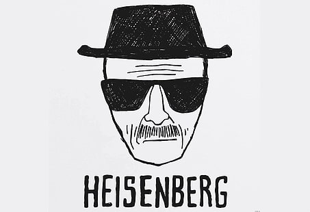
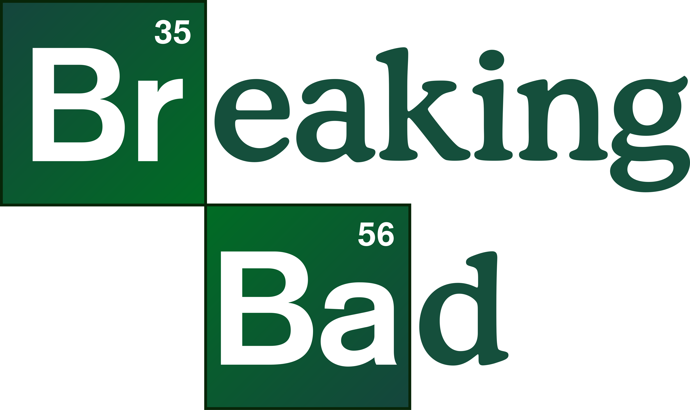
Professor · Químico · Heisenberg
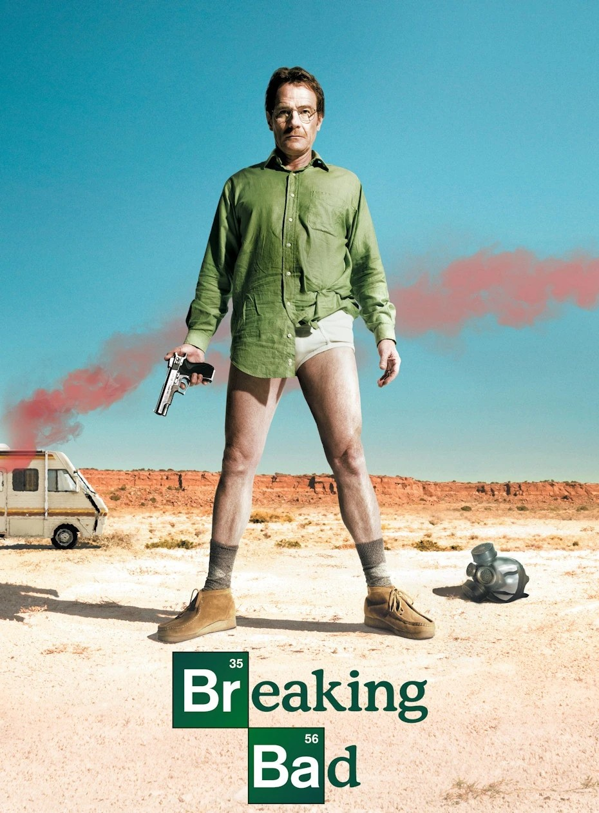
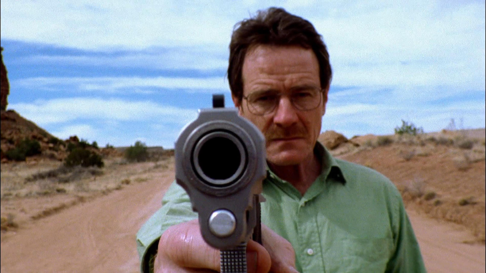
Walter White vive uma rotina modesta como professor de química do ensino médio em Albuquerque, dividindo seu tempo entre a sala de aula e um segundo emprego num lava-rápido, mal o suficiente para sustentar a casa. Ele é um homem de talento reconhecido academicamente, mas cuja carreira nunca correspondeu ao seu potencial, algo que carrega como uma frustração silenciosa. A notícia de um câncer de pulmão em estágio avançado muda tudo: de repente, o tempo que lhe resta passa a valer mais do que qualquer cautela acumulada ao longo da vida. É esse diagnóstico que o empurra para uma decisão radical, movida pelo medo de deixar a família desamparada.
A virada acontece quando ele reencontra Jesse Pinkman, um ex-aluno que atua na produção e venda de metanfetamina em pequena escala. Walter enxerga ali uma oportunidade: aplicar seu conhecimento de química para produzir um produto de pureza excepcional, muito acima do padrão do mercado. A parceria nasce desconfortável, cheia de atritos entre o rigor técnico de Walter e a informalidade arriscada de Jesse, mas funciona — o produto que os dois criam se destaca imediatamente pela qualidade.
Ao mesmo tempo, a vida doméstica de Walter segue um curso paralelo e cada vez mais tenso. Sua esposa, Skyler, está grávida do segundo filho do casal, e o filho mais velho, Walter Jr., lida com paralisia cerebral sem saber nada da dupla vida que o pai está construindo. Hank, cunhado de Walter e agente da DEA, investiga o submundo das drogas na região sem imaginar que está cada vez mais próximo de casa. Essa proximidade gera um dos primeiros grandes ganchos dramáticos da série.
Cada decisão nessa fase inicial ainda é cercada de justificativas: Walter repete para si mesmo que tudo é temporário, que existe um valor-limite a ser alcançado antes de parar. O nome Heisenberg surge como um disfarce prático, uma forma de proteger a identidade durante os primeiros contatos com o submundo do tráfico. Mas o disfarce já carrega uma sedução perigosa — a sensação de poder e competência que Walter nunca havia experimentado na vida cotidiana.
A temporada termina evidenciando que o ponto sem retorno já foi cruzado, mesmo que os personagens ainda não o percebam com clareza. As mentiras se acumulam, os riscos físicos aumentam, e a linha entre o professor cauteloso e o criminoso calculista começa a se apagar. É o alicerce sobre o qual toda a queda posterior será construída, plantando sementes de conflitos que vão amadurecer nas temporadas seguintes.
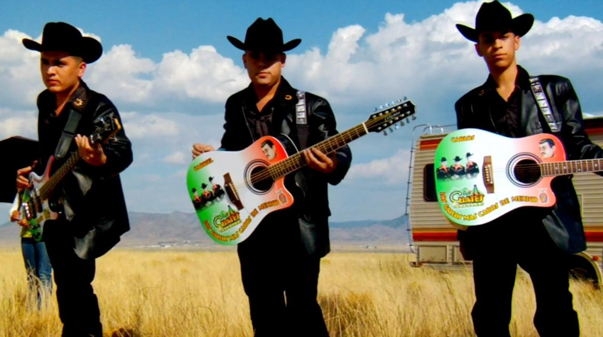
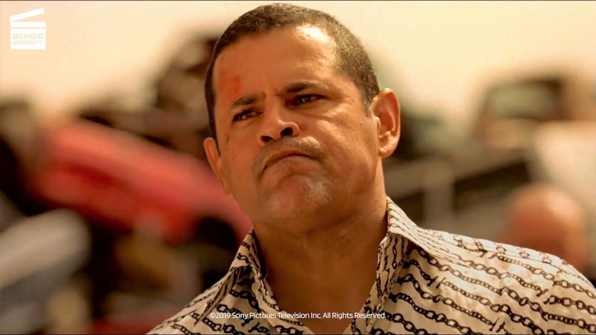
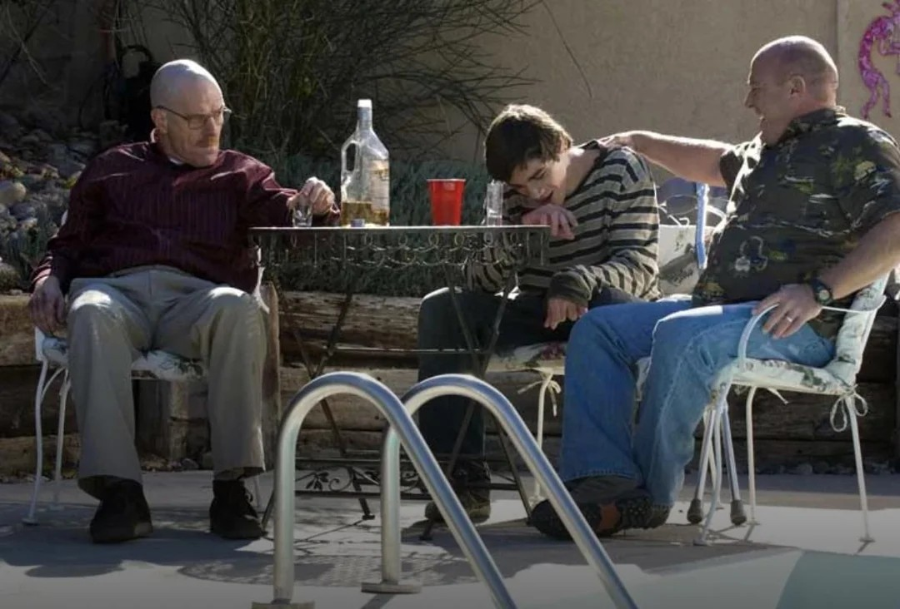
Se a primeira temporada mostra a entrada de Walter nesse mundo, a segunda mostra o preço de permanecer nele. As consequências deixam de ser hipotéticas: decisões tomadas sob pressão passam a gerar corpos, desconfiança e destruição que se espalham para pessoas que nada têm a ver com o negócio. A relação entre Walter e Jesse se aprofunda, mas também se contamina por manipulação, ressentimento e dependência mútua, um padrão que vai se repetir ao longo de toda a série.
Jesse enfrenta o colapso de uma relação importante em sua vida, e essa perda o empurra para um período de autodestruição marcado pelo abuso de substâncias. Walter, por sua vez, observa esse processo com uma mistura de culpa velada e cálculo frio, incapaz de admitir o quanto de responsabilidade cabe a ele nos rumos que a vida do parceiro está tomando. A relação entre os dois se torna mais complexa: já não são apenas sócios, são reféns um do outro.
Em paralelo, a expansão do negócio exige contato com figuras cada vez mais perigosas, revelando a Walter que competência técnica não é proteção suficiente num universo regido por violência. Cada nova ameaça é neutralizada com um grau maior de frieza, e o que antes parecia impensável se torna apenas mais uma ferramenta disponível. É nessa temporada que a série começa a testar até onde o espectador está disposto a acompanhar o protagonista sem julgá-lo.
A vida familiar de Walter continua se deteriorando por baixo da superfície: a gravidez de Skyler avança, mas o casamento se torna cada vez mais marcado por segredos, desconfiança e distanciamento emocional. Walter Jr. permanece alheio à verdade, tratando o pai com um respeito que soa cada vez mais irônico para quem acompanha a história de fora. A sensação geral é de que a vida "normal" da família está sendo mantida artificialmente, como uma fachada cada vez mais frágil.
O fechamento da temporada traz um dos momentos mais marcantes da série: uma tragédia aérea que conecta, de forma indireta mas inegável, as escolhas privadas de Walter a uma perda coletiva e pública. É um lembrete visual e narrativo de que as consequências de suas ações já não podem ser contidas dentro da própria vida — elas vazam para o mundo ao redor, atingindo pessoas que nunca souberam de sua existência.
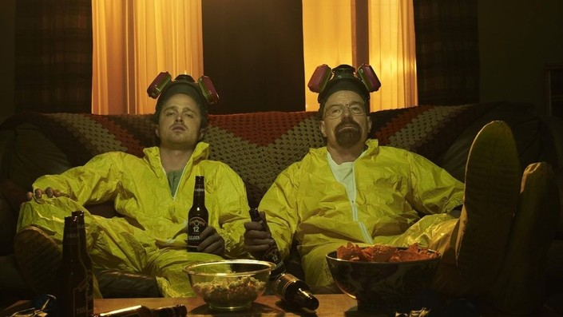
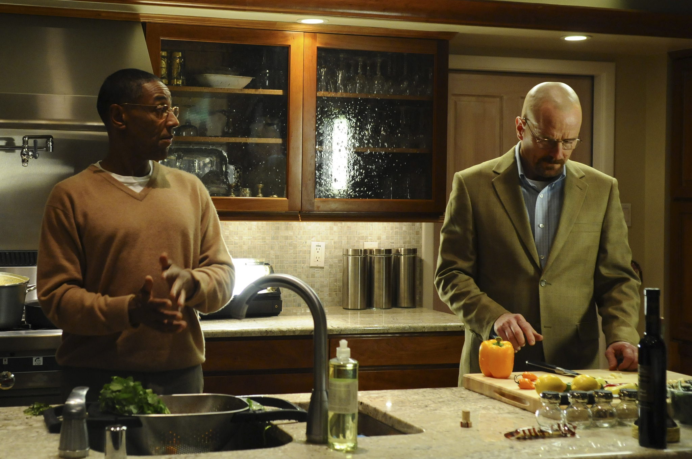
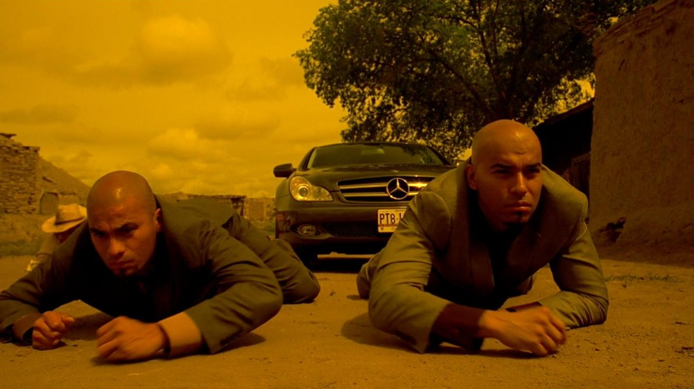
A terceira temporada introduz uma mudança de escala: Walter deixa de operar como um agente independente e passa a fazer parte de uma estrutura muito maior e mais sofisticada, comandada por Gustavo Fring, um empresário respeitado que esconde, sob a fachada de uma rede de lanchonetes, uma operação de distribuição de drogas meticulosamente organizada. Esse novo patamar oferece a Walter recursos que ele nunca teve — um laboratório de altíssimo nível, segurança e distância física dos riscos mais brutos da rua.
Mas o preço dessa estrutura é a perda de autonomia. Walter, acostumado a controlar cada variável, se vê subordinado a uma hierarquia que não hesita em usar de força quando necessário, e que enxerga tanto ele quanto Jesse como peças substituíveis. A tensão entre o desejo de Walter por reconhecimento e a exigência de discrição imposta por Gus cria um dos conflitos centrais da temporada, alimentando um jogo de poder silencioso mas constante.
Jesse, por sua vez, passa por um processo de amadurecimento doloroso. Longe da influência direta de Walter, ele começa a desenvolver sua própria consciência sobre a gravidade do que fazem, especialmente ao presenciar de perto as consequências humanas do negócio. Esse distanciamento moral entre os dois personagens vai se tornando um dos eixos emocionais mais fortes da série, prenunciando rupturas que ainda estão por vir.
No âmbito familiar, o segredo finalmente rompe a superfície: Skyler descobre a verdade sobre a dupla vida do marido, e a reação dela introduz uma nova dinâmica ao casamento — não mais de ignorância, mas de cumplicidade forçada e negociação moral. Hank, ferido gravemente num confronto ligado indiretamente ao próprio Walter, entra numa fase de recuperação física e psicológica que reconfigura sua relação com o trabalho e com a própria vulnerabilidade.
A temporada termina com Jesse sendo empurrado, por manipulação direta de Walter, a cometer um ato que vai selar de forma definitiva o quanto ele já foi corrompido pelo mundo em que foi inserido. É um desfecho que reposiciona Jesse não mais como coadjuvante ingênuo, mas como personagem carregando um peso moral que vai definir sua trajetória dali em diante.
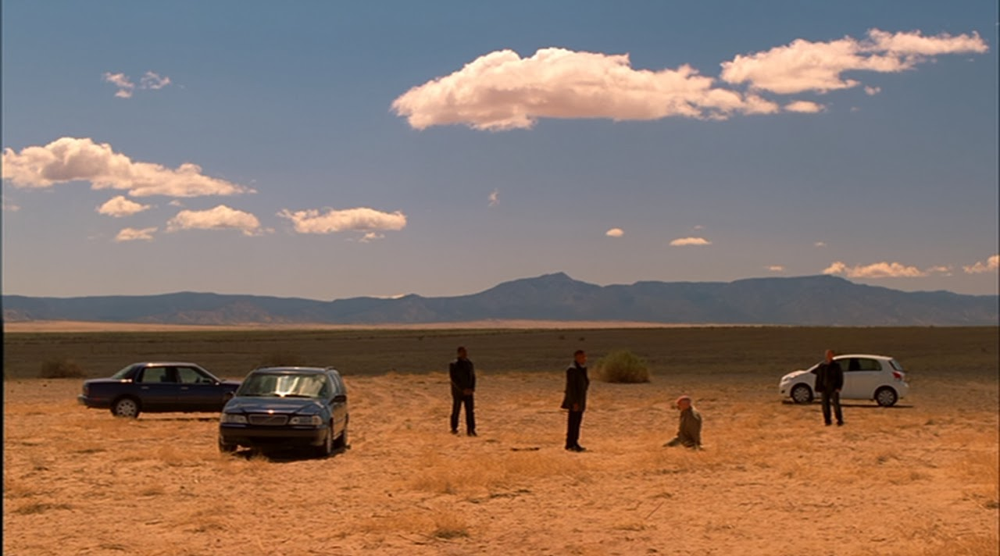
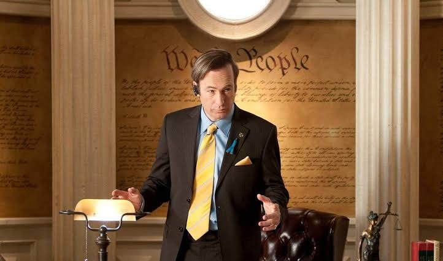
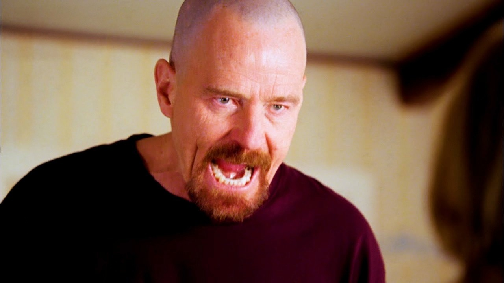
A quarta temporada transforma a relação entre Walter e Gus Fring numa disputa de poder silenciosa, quase de xadrez, em que cada movimento é calculado e a violência explícita cede espaço à manipulação estratégica. Walter percebe que sua utilidade técnica não é garantia de sobrevivência dentro dessa organização, e passa a agir por conta própria para tentar recuperar controle sobre o próprio destino, mesmo sem recursos ou aliados evidentes.
Essa disputa expõe o quanto Walter está disposto a sacrificar em nome da própria permanência no jogo. Decisões que antes exigiriam alguma hesitação passam a ser tomadas com uma frieza cada vez mais alarmante, incluindo manipulações que colocam em risco pessoas próximas a Jesse. A linha entre proteger a família e proteger o próprio ego — ou a própria vaidade de ser reconhecido como o melhor no que faz — fica cada vez mais difícil de traçar.
Hank, já recuperado fisicamente, canaliza sua energia para uma investigação obstinada sobre a identidade de Heisenberg, sem perceber o quanto está fisicamente próximo da resposta que procura. Essa busca, conduzida com crescente intensidade profissional, cria uma ironia dramática constante: o espectador sabe o que Hank ainda não sabe, e cada cena entre os dois cunhados carrega uma tensão que não depende de diálogo explícito para existir.
Jesse, arrasado por perdas emocionais acumuladas, se aproxima cada vez mais de Gus Fring, encontrando ali uma espécie de reconhecimento profissional que nunca recebeu de Walter. Essa aproximação cria uma nova camada de desconfiança entre os dois antigos parceiros, com Walter observando, com ciúme mal disfarçado, o deslocamento da lealdade de Jesse. A parceria que sustentava toda a história começa a mostrar rachaduras estruturais.
O confronto final entre Walter e Gus Fring encerra a temporada com um dos desfechos mais emblemáticos da série, resolvido por meio de um plano meticuloso que mistura química, paciência e manipulação psicológica. É a vitória mais decisiva de Walter até aquele ponto — mas também a que deixa mais claro o quanto ele já se tornou capaz de orquestrar violência em nome da própria sobrevivência e ambição.
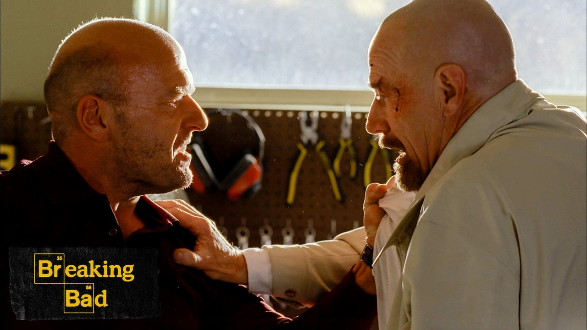
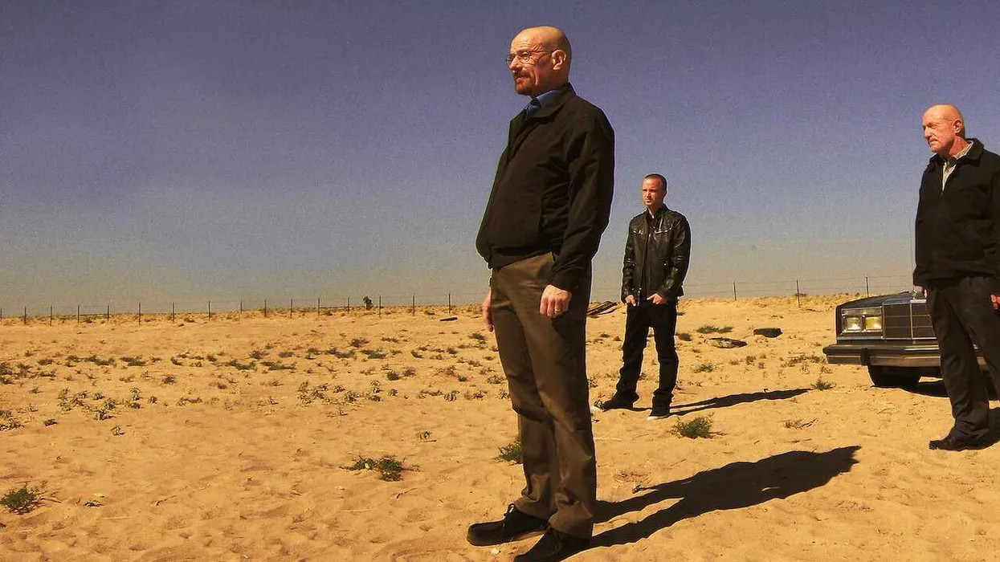
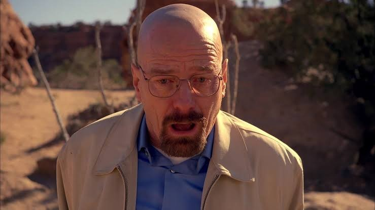
Livre da sombra de Gus Fring, Walter finalmente alcança aquilo que buscava desde o início: controle total sobre um império que ele mesmo constrói, sem intermediários acima dele. Essa fase expõe, de forma mais nua do que nunca, que a motivação original — proteger a família diante da própria mortalidade — já não é mais suficiente para explicar suas escolhas. O que resta é orgulho, ambição e a necessidade de ser reconhecido como o melhor em algo, mesmo que esse algo seja profundamente destrutivo.
A operação cresce em volume e sofisticação, gerando uma riqueza que ultrapassa qualquer necessidade prática, a ponto de o próprio dinheiro se tornar um problema logístico e simbólico. Esse excesso funciona como espelho da desproporção entre o que Walter originalmente dizia buscar e o que de fato conquistou. Jesse, cada vez mais consumido pela culpa, se distancia definitivamente do universo que ajudou a construir, buscando qualquer saída que lhe permita algum tipo de redenção.
O ponto de virada mais decisivo da temporada acontece quando Hank finalmente conecta as peças e descobre, de forma direta e pessoal, que Heisenberg sempre esteve dentro de sua própria família. Essa revelação destrói de vez a fachada que sustentava as relações familiares até ali, transformando cada encontro doméstico subsequente numa negociação tensa entre lealdade de sangue e dever profissional.
A queda de Walter se torna então inevitável e progressivamente pública: relações se rompem, aliados se tornam inimigos, e a proteção que o dinheiro e a inteligência ofereciam por tanto tempo se mostra insuficiente diante do colapso que ele mesmo ajudou a construir. Isolado, ele é forçado a confrontar, sem os disfarces de outrora, o tipo de homem em que realmente se transformou ao longo da jornada.
No desfecho, Walter retorna de um exílio autoimposto não mais em busca de redenção fácil, mas para tentar corrigir, à sua maneira imperfeita e tardia, alguns dos danos que causou — especialmente em relação a Jesse. É um final que não absolve o personagem, mas oferece uma última tentativa de coerência entre quem ele se tornou e os poucos vínculos que ainda restam para proteger.